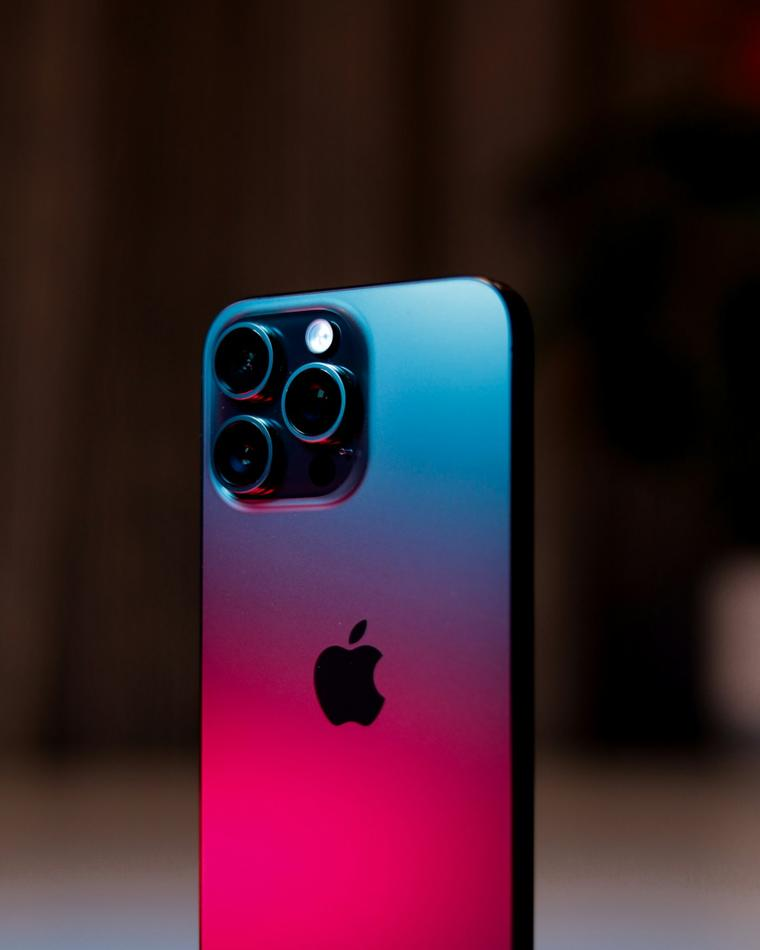
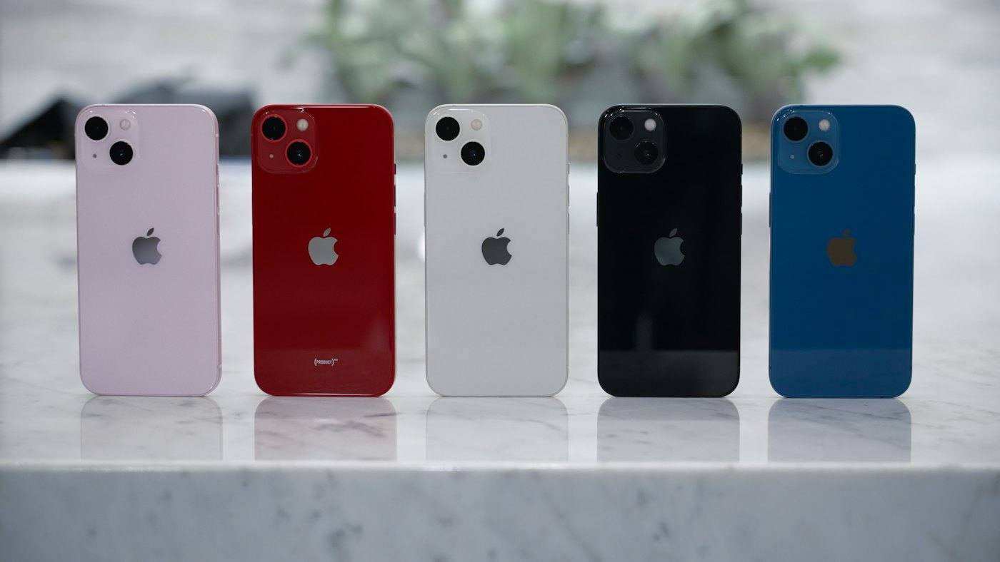
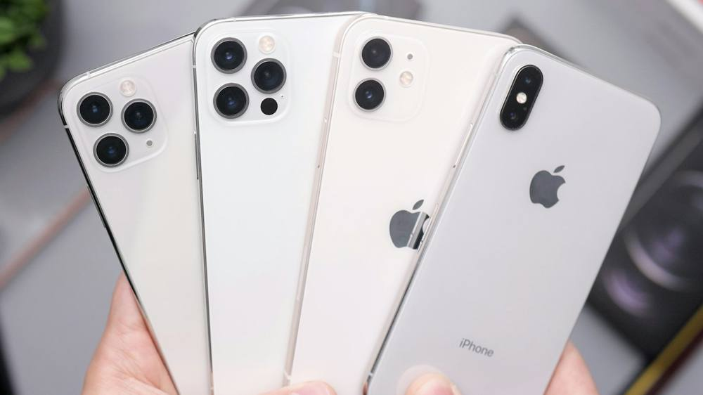

批发供应
面向企业客户的二手 iPhone 批量供应，规格、成色与数量清晰明确。

Siersz 专注于二手苹果设备的企业间批发供应，产品以 iPhone 为主。我们为运营商、零售商、电商平台和经销商提供稳定、透明、分级一致的货源。
Siersz 是 Sunstrike 集团的姊妹公司，依托集团遍布全球的供应网络，以中文为主要沟通语言，服务中文市场的企业买家。
[在此补充 Siersz 自身的成立时间、业务模式、服务对象]提供多种型号、容量与颜色，具体库存请联系我们确认。 [在此补充主要型号和成色等级]

面向企业客户的二手 iPhone 批量供应，规格、成色与数量清晰明确。
统一的成色分级标准，出货前逐台检测并记录。
按订单安排发货与交付，订单进度可追踪。
通过集团网络获取设备。
逐台检测、清除数据、统一分级。
按订单发货并同步进度。
反馈与持续合作。[如有质保请补充]
[按实际客户类型增删]
以下为 Sunstrike International 集团的整体数据，Siersz 依托这一网络开展业务。
[上线前请与集团确认以上数据，并确保口径一致]
集团在五大洲布局，主要枢纽包括：
[请确认哪些枢纽可以公开，以及 Siersz 实际可使用的节点]

每台设备出货前经过检测与分级，让买家清楚知道收到的是什么。
[按实际流程修改以上要点]